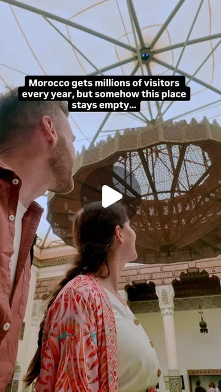

Instagram Reel

We walked past the entrance twice before we finally went in. 🇲🇦
image transcript (enriched by ClaudeClaw)
Summary
[CAPTION]
We walked past the entrance twice before we finally went in. 🇲🇦
The Museum of Marrakech sits inside a late 19th century palace in the heart of the UNESCO-listed Medina and somehow almost nobody goes inside.
[CAPTION]
We walked past the entrance twice before we finally went in. 🇲🇦
The Museum of Marrakech sits inside a late 19th century palace in the heart of the UNESCO-listed Medina and somehow almost nobody goes inside.
While the crowds line up for Ben Youssef Madrasa and Bahia Palace this one stays quiet. We had the central courtyard almost entirely to ourselves and honestly that made it better.
The central hall alone is worth the entrance fee. Just look up. There is a lamp hanging from the ceiling that will stop you in your tracks.
It takes about 45 minutes to fully explore, costs next to nothing, and sits right in the middle of everything you’re already walking past.
Most people walk straight by it. Don’t be most people.
What’s the most underrated thing you’ve done in Marrakech? Drop it below 👇
Save this for your Morocco trip 🇲🇦
📍 Museum of Marrakech, Medina, Marrakech Morocco
[IMAGE]
A close-up view of a terracotta brick wall acting as a vertical garden, with small potted plants and water droplets falling.
View original on Instagram Reel →